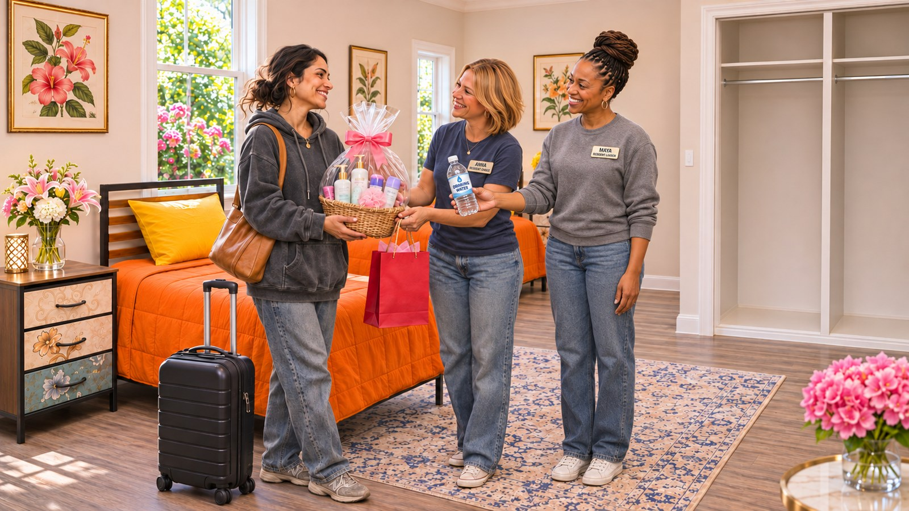

631 Public Street · Providence
A sober living residence dedicated to women, and the designated location for the HOS sober residence office.
Explore the Providence residence visionSober living & residential models · Rhode Island
House of Shammah RI brings together different residential models centered on dignity, connection and a place to move forward. Our Providence sober living residence is dedicated to women; our Warwick residence is mixed and mainly serves older adults.
Welcoming inquiries from Rhode Island and other states.

What we offer
Different residential settings in Rhode Island, with a women’s sober living model in Providence and a mixed residence mainly for older adults in Warwick. Our focus is dignity, everyday structure, connection and nonmedical support.
HOS is pursuing the recognition and approval steps needed to participate in eligible recovery-housing funding opportunities and connect residents with community resources. Residence certification and grant approval have not yet been received. Funding depends on the program’s rules and individual eligibility.
One organization. Different residential models.
House of Shammah serves people of all sexes through different residential models. Each location has its own resident community and purpose.
A sober living residence dedicated to women, and the designated location for the HOS sober residence office.
Explore the Providence residence visionA mixed residence mainly serving older adults. This is a distinct residential model within House of Shammah.
Explore the Warwick welcomeContact HOS to discuss the appropriate location, its services, eligibility and current availability.
A home. A community. A next step.
Recovery is personal. A welcoming place to live can make room for the next step.
At House of Shammah RI, the focus is on respectful shared living, practical life skills and encouragement. The resident’s goals and choices remain central.
We coordinate with healthcare and mental-health teams with the resident’s permission and any required written authorization.
See what guides our home
Everyday connection
Coffee and conversation. A card game. Shared responsibility for the home. Space for laughter, quiet time and encouragement.
Explore our illustrated community vision and the proposed styling inspired by the actual property.
Meet the community visionA message from the owner
Building Stability.
Restoring Hope.
Creating Independence.
House of Shammah RI is being shaped around a simple commitment: a respectful home where the resident can work toward stability, connection and greater independence.
Owner’s training: NARR training completed. The sober living model at 631 Public Street is structured around NARR Standard 3.0, Level III, and is seeking qualifying recognition through Rhode Island’s recovery-housing certification process. We are committed to diversity, equity and inclusion, with dignity and respect for every person seeking a supportive sober residence and recovery program. Residence certification and grant approval have not yet been received.
Our vision, mission, values and ethicsYour next step
Rhode Island and out-of-state applicants are welcome to inquire.